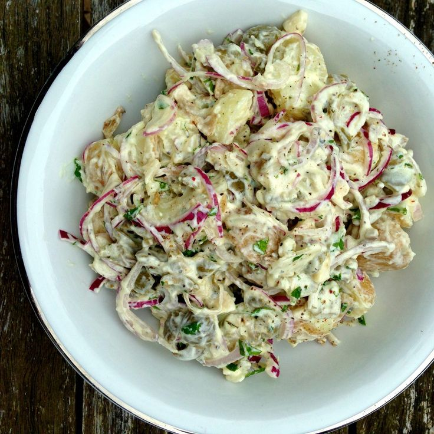

Potato salad with skyr is a fresh and nutritious twist on the classic potato salad.
Instead of traditional mayonnaise, this version uses skyr, a thick and creamy Icelandic dairy product, which adds a tangy flavor and a boost of protein.
Combined with boiled potatoes,crunchy onions and raw garlic, this salad is both satisfying and wholesome.
- 700g of potatos
- 1 tsp (220g) Skyr
- 1 red onion(about 100g)
- 1 tbsp mustard
- 3-4 cloves of garlic
- 1/2 tsp fresh lemon juice or apple vinegar
- Salt to taste
- Prepare the potatoes
- Peel and wash the potatoes
- Cut them into cubes
- Put them to voil for about 20 minutes(you can use a fork to check if they are soft)
- Once cooked, drain and allow to cool
- While they are still hot, lightly salt them
- Cut the onions into fine strips
- Squeeze the garlic(Or chop it in very small pieces)
- Prepare the Dressing
- Add the onions and garlic to a large bowl
- In the same bowl, add the lemon, mustard and skyr
- Season with salt to taste
- Stir everything together
- Cover the bowl and put it inside the fridge(optional)
- Add the cooled potatos and mix well